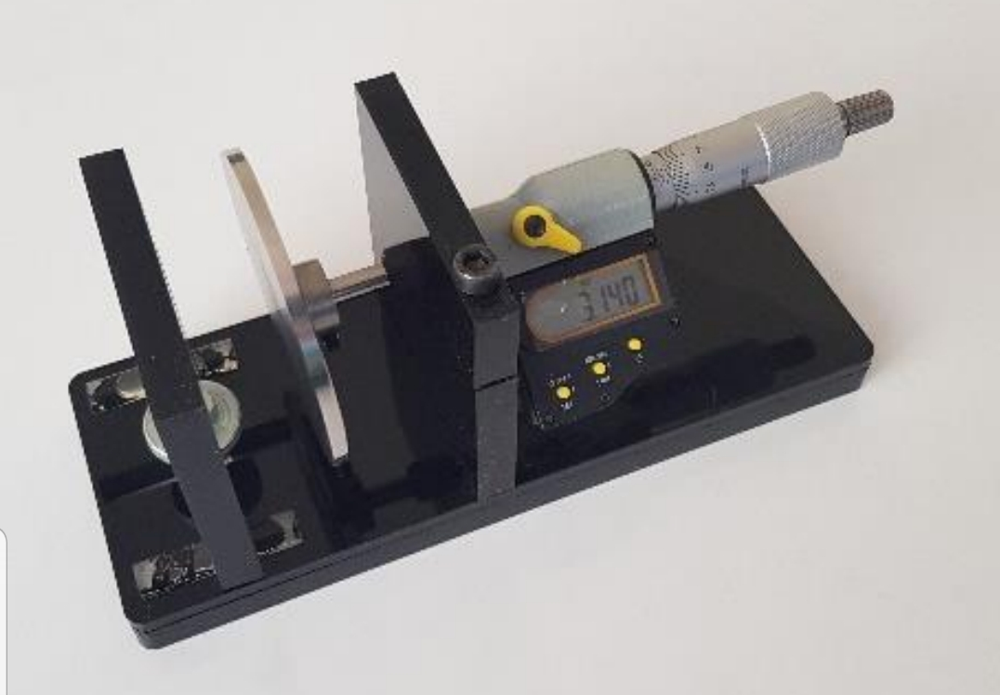
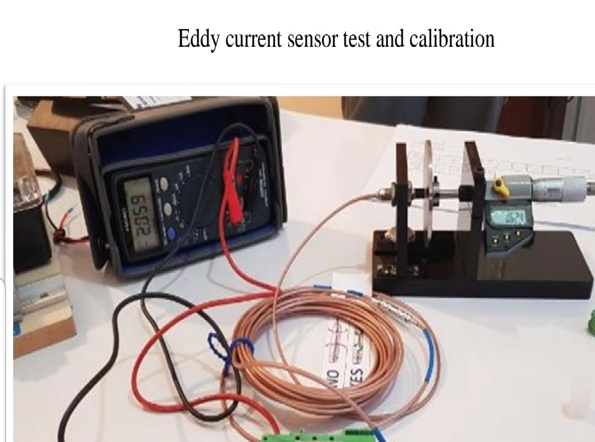

محصولات دانش بنیان شرکت
بازگشت به صفحه اصلی

دستگاه تست و اندازه گیری Calib64 اولین با در شرکت پایش توربین ویدا طراحی و ساخته شده که صحت عملکرد انواع سنسور Eddy Current بوسیله ی آن بررسی می شود

عملیات بررسی صحت عملکرد سنسورهای PR6423 از برند epro